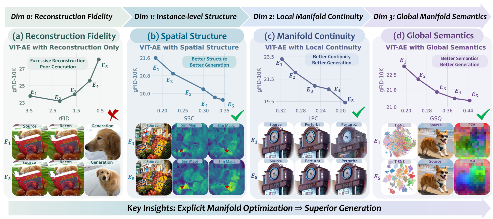
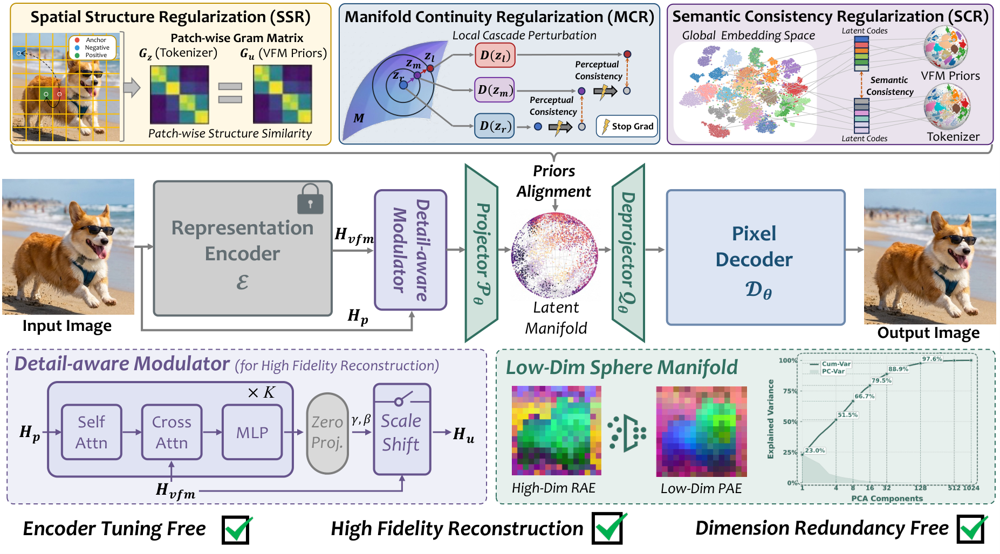
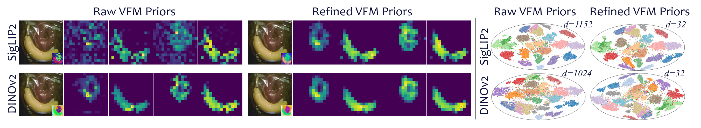
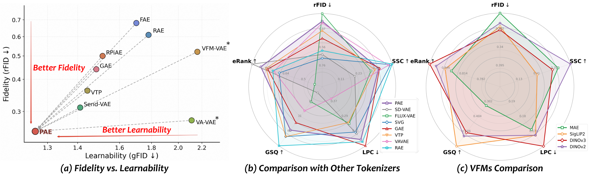
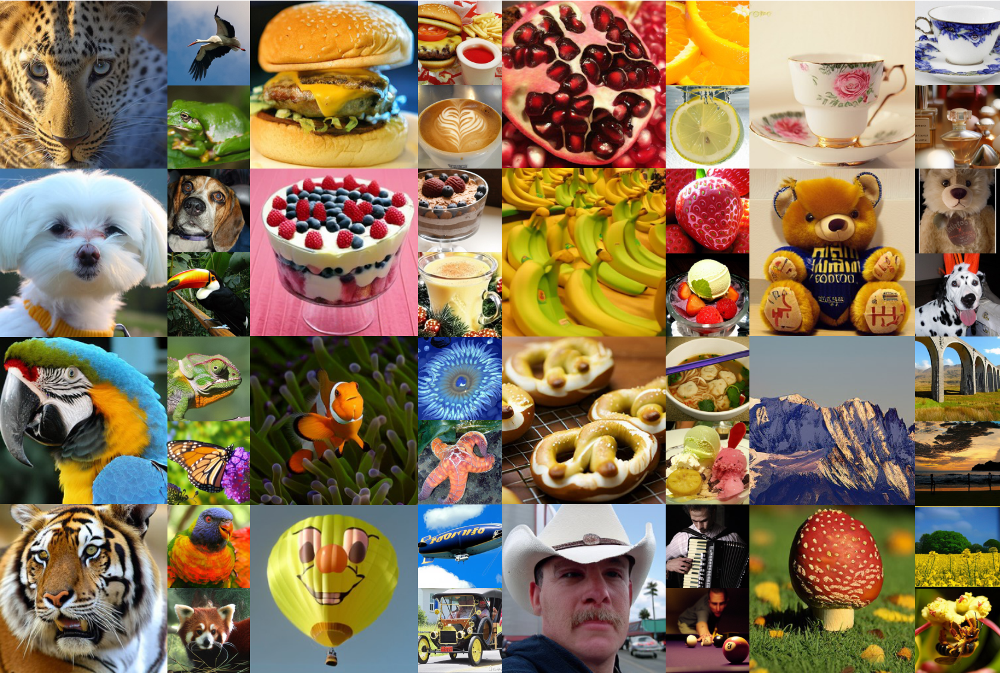
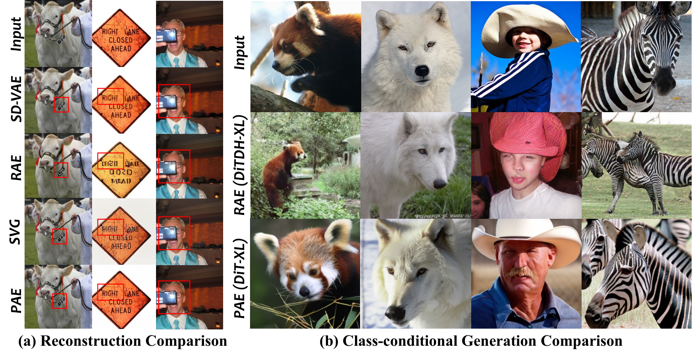
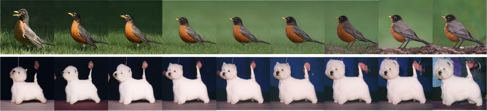
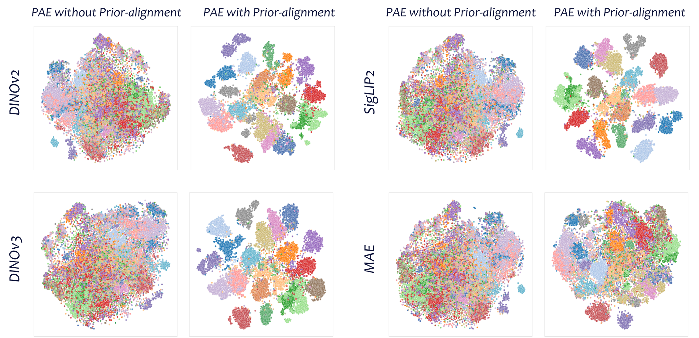

Tokenizers are a crucial component of latent diffusion models, as they define the latent space in which diffusion models operate. However, existing tokenizers are primarily designed to improve reconstruction fidelity or inherit pretrained representations, leaving unclear what kind of latent space is truly friendly for generative modeling. In this paper, we study this question from the perspective of latent manifold organization. By constructing controlled tokenizer variants, we identify three key properties of a diffusion-friendly latent manifold: coherent spatial structure, local manifold continuity, and global manifold semantics. We find that these properties are more consistent with downstream generation quality than reconstruction fidelity. Motivated by this finding, we propose the Prior-Aligned AutoEncoder (PAE), which explicitly shapes the latent manifold instead of leaving diffusion-friendly manifold to emerge indirectly from reconstruction or inheritance. Specifically, PAE leverages refined priors derived from VFMs and perturbation-based regularization to turn spatial structure, local continuity, and global semantics into explicit training objectives. On ImageNet 256×256, PAE improves both training efficiency and generation quality over existing tokenizers, reaching performance comparable to RAE with up to 13× faster convergence under the same training setup and achieving a new state-of-the-art gFID of 1.03. These results highlight the importance of organizing the latent manifold for latent diffusion models.
We conduct controlled pilot experiments to investigate what latent manifold properties matter for downstream diffusion. As shown below, better reconstruction alone (rFID) does not guarantee better generation quality (gFID). In contrast, improvements in spatial structure coherence (SSC), local manifold continuity (LPC), and global manifold semantics (GSQ) consistently correlate with better generation across controlled tokenizer variants.

PAE uses a frozen Vision Foundation Model (VFM) as a semantic reference. A Detail-Aware Modulator (DAM) injects pixel-level details while preserving the VFM as the dominant semantic source. On top of this backbone, three prior-alignment objectives explicitly shape the latent manifold:

Raw VFM features are not directly suitable as alignment targets: they can be channel-redundant for semantic supervision and spatially imprecise at tokenizer resolution. PAE introduces a lightweight refinement strategy that compresses VFM features into bottleneck-matched semantic targets while applying low-pass spatial refinement for cleaner structural supervision.

Previous tokenizers typically trade reconstruction fidelity against downstream learnability, whereas PAE achieves both. The balanced latent geometry—strong spatial structure, local continuity, and global semantics—explains PAE's improved generation quality.

Class-conditional samples generated by PAE with LightningDiT-XL/1 on ImageNet 256×256 demonstrate excellent image quality with rich details, coherent structures, and diverse content.

(a) Reconstruction: PAE outperforms other tokenizers in reconstructing fine details (e.g., thin structures, text, and faces). (b) Generation: ImageNet samples from LightningDiT-XL/1 (80 epochs) demonstrating the high fidelity and coherence of PAE.

PAE produces a smooth and semantically meaningful latent space. Interpolating between two latent codes yields natural transitions, demonstrating the local continuity of the learned manifold.

t-SNE visualization of the latent space shows that PAE produces well-organized semantic clusters, confirming the effectiveness of prior alignment in shaping global manifold semantics.

@misc{yue2026mattersdiffusionfriendlylatentmanifold,
title={What Matters for Diffusion-Friendly Latent Manifold? Prior-Aligned Autoencoders for Latent Diffusion},
author={Zhengrong Yue and Taihang Hu and Mengting Chen and Haiyu Zhang and Zihao Pan and Tao Liu and Zikang Wang and Jinsong Lan and Xiaoyong Zhu and Bo Zheng and Yali Wang},
year={2026},
eprint={2605.07915},
archivePrefix={arXiv},
primaryClass={cs.CV},
url={https://arxiv.org/abs/2605.07915},
}